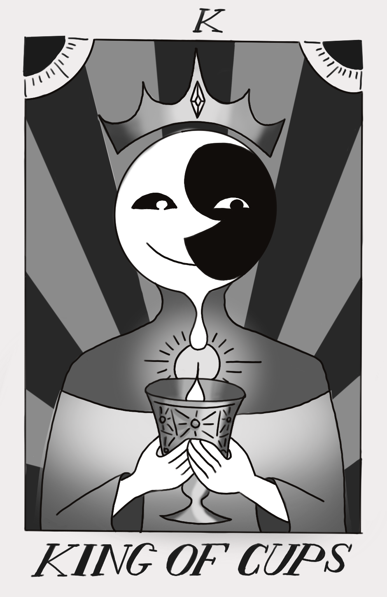
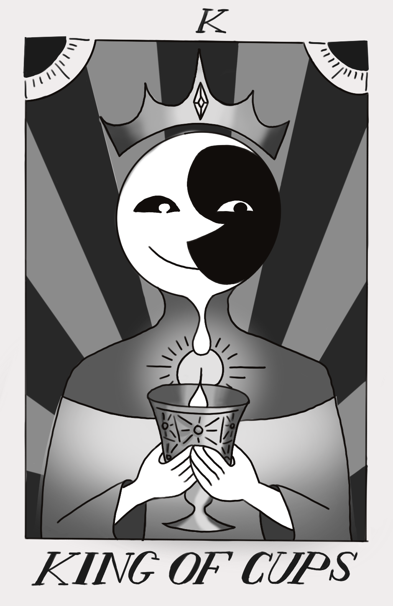
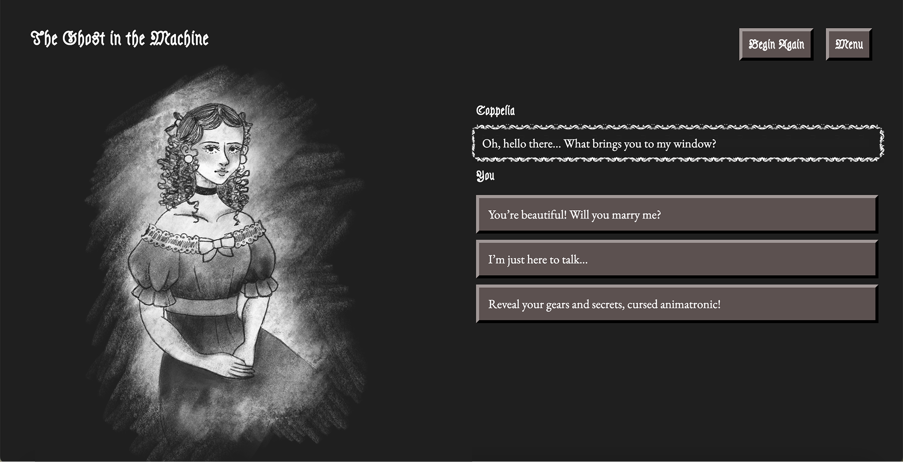
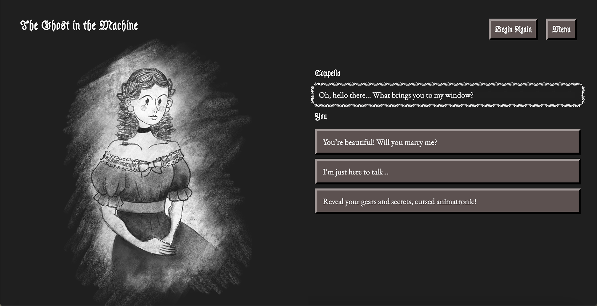
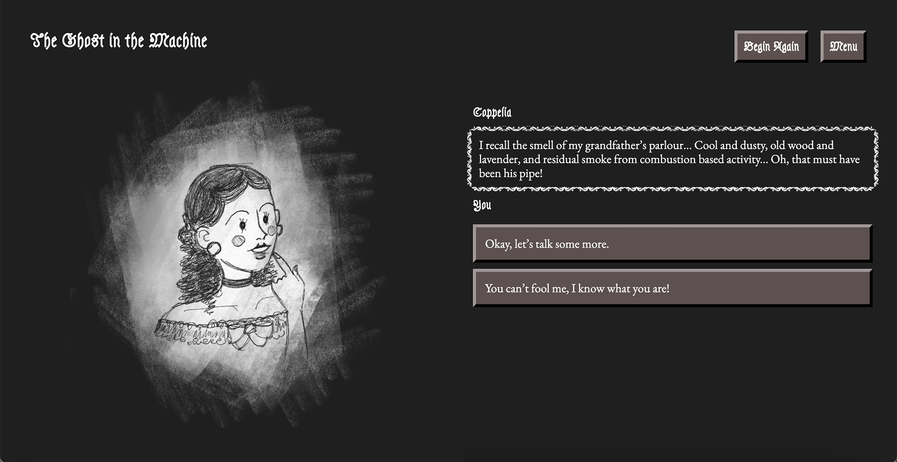
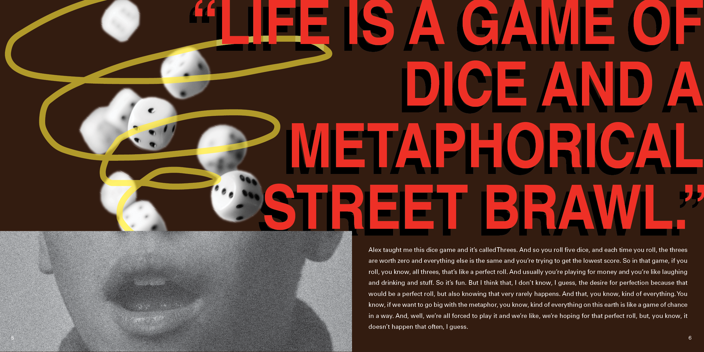
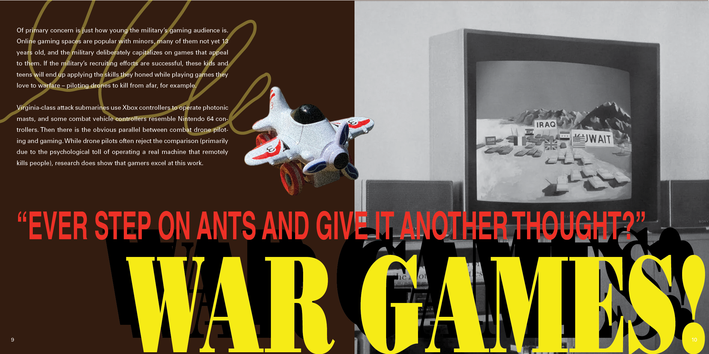
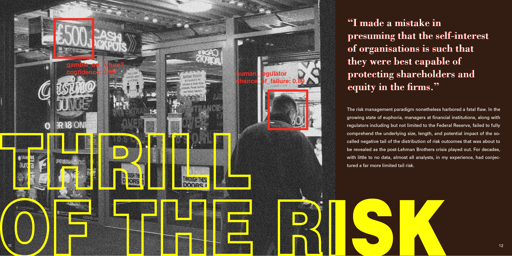

for kdvs
Keeping freeform radio culture alive at the longest running college radio station in the world. I’ve curated music for a weekly radio show, photographed events, and contributed to PR campaigns and a quarterly zine with my some of my favorite people in the world.
OPERATION: RESTORE MAXIMUM FREEDOM
I initiated a collaboration with our award-winning student-run media agency Aggie Studios to cover KDVS’ 60th annual music festival, a community gathering featuring Sacramento’s vibrant indie music scene. That’s me reporting and interviewing!
A History of KDVS
For KDVS' 60th anniversary fundraiser, I collaborated on a community-loved fundraising video produced in just one week, contributing on-screen and behind the scenes with improvised ideas and creative input that reflected the team’s genuine passion.
Illustrations
Designs published in KDViations, the station’s quarterly zine, and created for merchandise sold for station fundraising.
 

The Ghost in the Machine
An experimental visual novel exploring how designed spaces can influence the way people interact with and perceive their experiences. Inspired by ETA Hoffman’s 1816 short story “The Sandman”, the site acts as a Turing test of sorts, in which the user interacts with the webpage to eventually determine whether they are perceiving a human or a robot.
  PLAY & PEACE
My work in design often reflects my experience as a cognitive science student exploring a new field that blurs the lines between human and machine, and a social science researcher investigating how expanding boundaries in technology impact how humans interact with each other. With this art book, I wanted to explore the concept of “play” and its relationship to human nature from an alternative perspective— play that evolves into gambles, risks, manipulation, and performance. The visual direction was inspired by early computer graphics and computer vision models, drawing a connection between technological innovation and a fight for survival.
  
Thanks for reading!
View Additional Projects